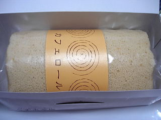

ロールケーキのうずまき屋のカフェロール
2009/08/09
ロールケーキ専門店のロールケーキです。専門店って聞くと期待しちゃいますね。

カフェロールをチョイスしました。
スポンジはきめ細かく、淡いコーヒー味がしました。クリームは少なめですが、バターが強く、甘さを強く感じました。
スポンジあっさり、クリーム濃い目ですね。
店名が「うずまき屋」なので、ちょっとレトロな感じのロールケーキ屋さんなのかも知れません。
島根県松江市田和山町117
閉店しました。
2009/08/09
ロールケーキ専門店のロールケーキです。専門店って聞くと期待しちゃいますね。

カフェロールをチョイスしました。
スポンジはきめ細かく、淡いコーヒー味がしました。クリームは少なめですが、バターが強く、甘さを強く感じました。
スポンジあっさり、クリーム濃い目ですね。
店名が「うずまき屋」なので、ちょっとレトロな感じのロールケーキ屋さんなのかも知れません。